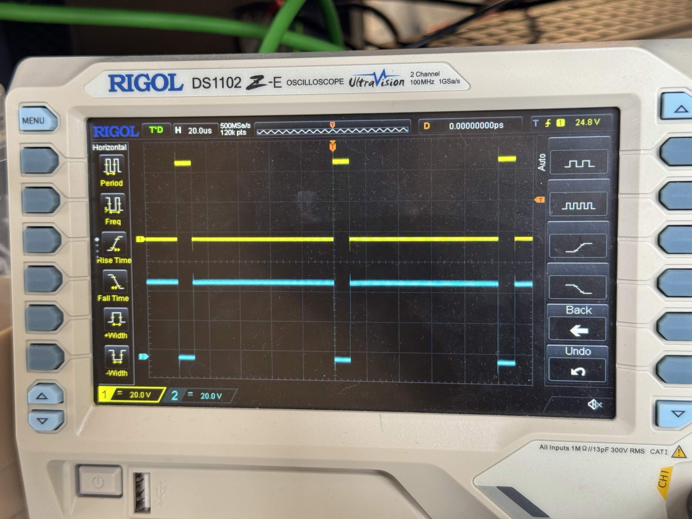
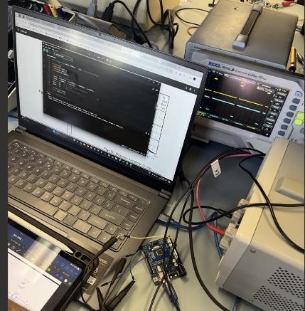

Design
The Arduino generates phase-correct PWM for the gate driver, which switches the high- and low-side MOSFETs. Potentiometers set the weld duration and current level. Op-amp stages condition the current and tip-voltage signals for the Arduino’s ADC, and the software shows readings on an LCD and logs them to an SD card.
The 100 A figure was the design target. We did not measure it on the finished prototype.
Debugging
Most of my time on this project went into bench debugging with the oscilloscope and multimeter. The main problems we found and fixed:
- The high-side MOSFET wouldn’t turn on. Its supply wasn’t connected and a capacitor was missing its ground, so the bootstrap capacitor never charged. Rewiring the supply and grounding the capacitor fixed it.
- The two MOSFETs were sometimes on at the same time. We added dead time in the PWM code, shortened the high-current paths, and cleaned up the soldering and wire lengths.
- The low-side MOSFET was slow to turn off. Shorter leads and 1 Ω gate resistors in place of the original 10 Ω sped it up.
- The PWM timing was wrong. We corrected it in the code and checked it again on the scope.

Result
Bench tests confirmed that the control circuit drove the MOSFET switching stages as designed.
